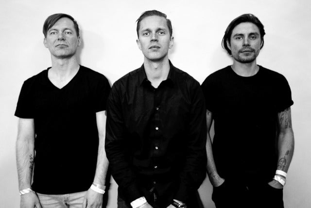

Death Stranding
"Ryan Karazija, frontman e força motriz por trás do Low Roar, morreu aos 40 anos. Sua bela música e letras, cantadas em sua voz assombrosa, tocaram a vida de tantas pessoas em todo o mundo e continuarão a fazê-lo. Ele era uma alma gentil e bonita e nossos mundos estão destruídos por essa perda. Que possamos honrar sua memória através de sua arte e mantê-lo para sempre em suas canções. O sexto disco do Low Roar já estava em andamento e será concluído e lançado quando estiver pronto. Por favor, respeite a privacidade de sua família neste momento incrivelmente difícil".
Eden é a melhor banda
nao passe o mouse acima
